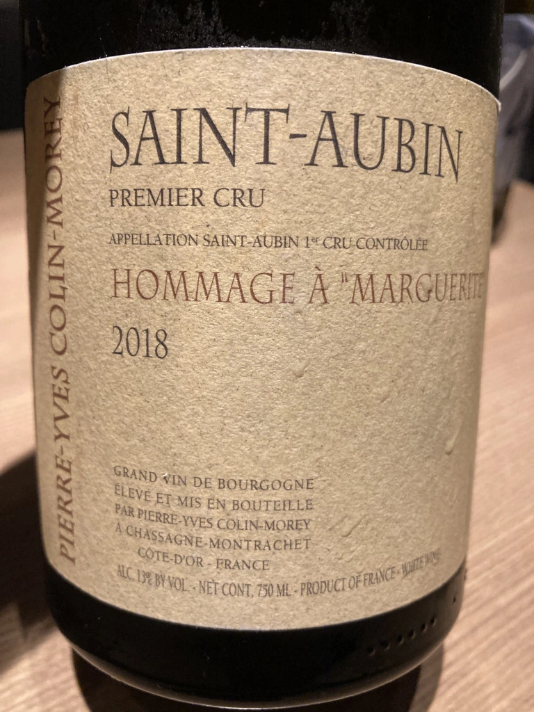

- Type
- White Still, Dry
- Producer
- Colin-Morey Pierre-Yves
- Vintage
- 2018
- Location
- France, Saint-Aubin AOC
- Grapes
- Chardonnay
- Alcohol
- 13
- Sugar
- 1
- Price
- 1847 UAH
- Cellar
- N/A
Ratings
2021-08-16 - 8.50
Tasted blind and thought about Australia (Ten Minutes by Tractor for example). Sophisticated bouquet: white pepper with Roquefort, honeydew, pineapple, flint, coconut and citrus. A little bit bitter, but creamy palate, flavours of citrus and canned pineapple. Great.